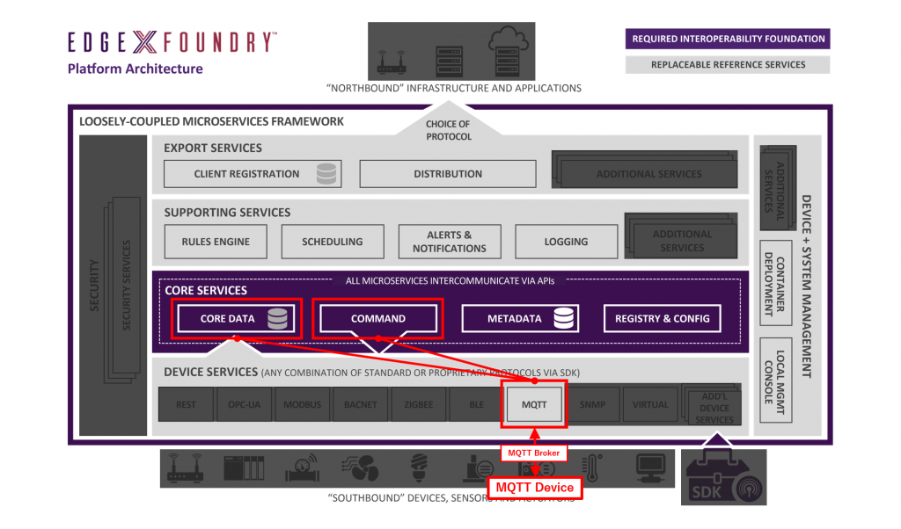
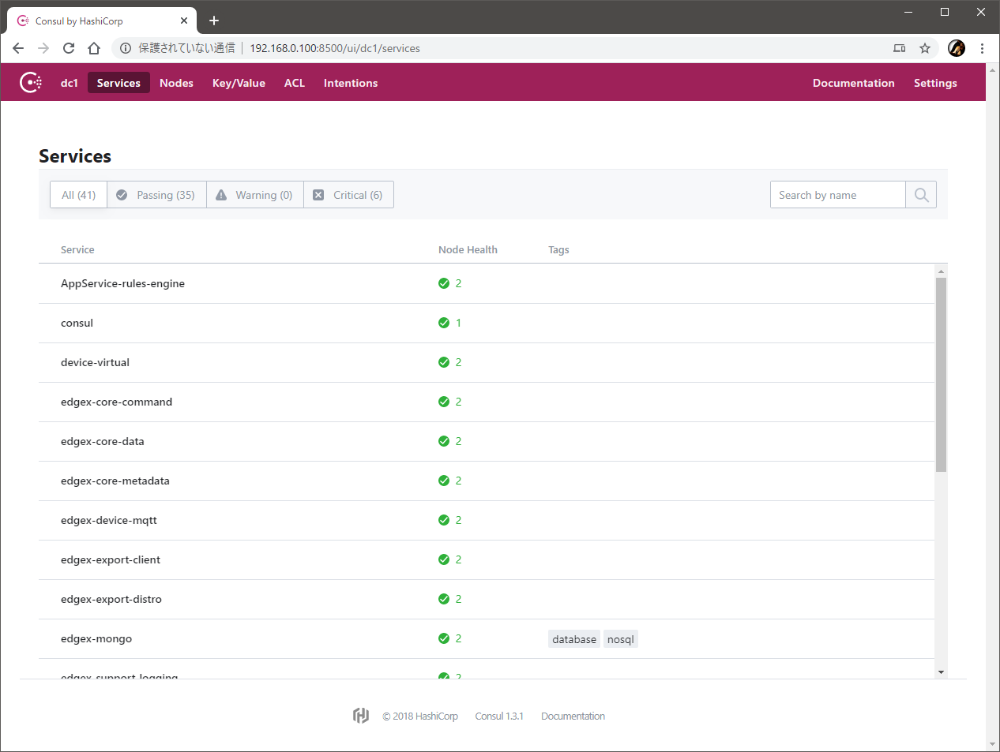
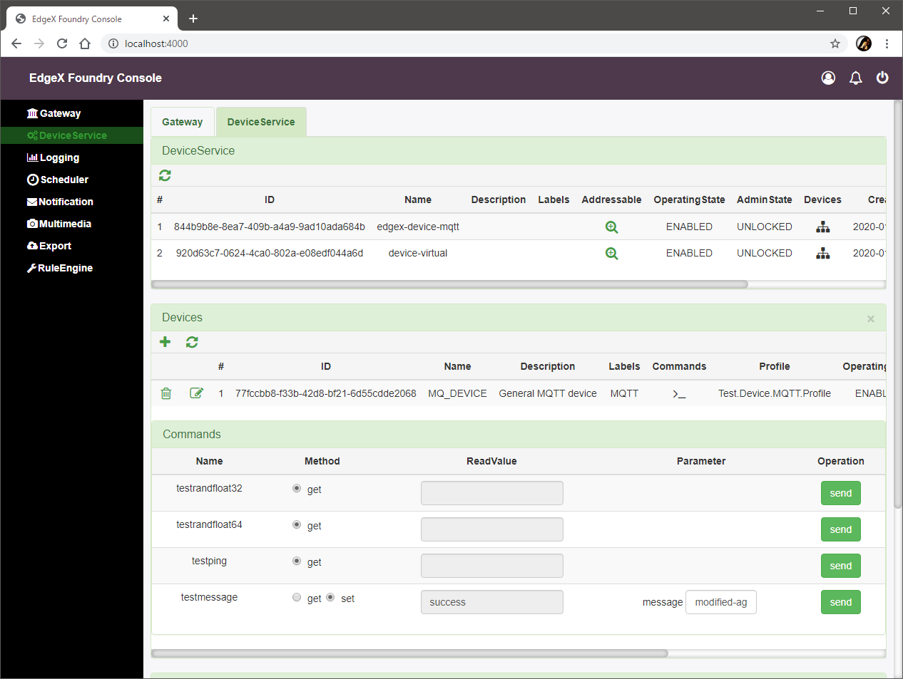

Lab 3 - デバイスサービスの追加（MQTT）
前のラボで利用した仮想デバイスは、デバイスからのデータの受け取りやデバイスへのコマンド実行などをテストする目的ではたいへん便利ですが、現実世界とのインタラクションはできません。
そこで今回は、MQTT をインタフェイスにもつデバイス（のシミュレータ）を用意し、下図のように EdgeX Foundry がそのデバイスと実際に（MQTT ブローカを介して）インタラクションできる状態を構成します。

必要なファイルの用意
前のラボでリポジトリをクローンしていない場合はクローンします。
| git clone https://github.com/kurokobo/edgex-lab-handson.git
|
このラボでは、lab03 ディレクトリの中身を利用します。
新しいデバイスの仕様と動作確認
まずは、今回新しく EdgeX Foundry の制御下におきたいデバイスの仕様を整理します。その後、実際にそのデバイスのシミュレータを動作させ、仕様通りに動くことを確認します。
新しいデバイスの仕様
今回は、以下のような仕様のデバイスを考えます。
- 二種類のセンサを持つ
- 二種類の文字列情報を持つ
- トピック
DataTopic にセンサ randfloat32 の値を 15 秒ごとに配信する
{"name":"MQ_DEVICE","cmd":"randfloat32","randfloat32":"<値>"} の形式で配信する
- トピック
CommandTopic でコマンドを待ち受ける
{"name":"MQTT_DEVICE","method":"<get または set>","cmd":"<コマンド名>"} の形式のコマンドを受け取る
- コマンドを受け取ったら、コマンド応じて処理を実行し、結果をトピック
ResponseTopic に配信する
- コマンドのメソッドが
set だった場合は、保存されている message を書き換える
- コマンドが
ping だった場合は、pong を返す
- コマンドが
message だった場合は、保存されている message を返す
- コマンドが
randfloat32 または randfloat64 だった場合は、それぞれ対応するセンサの値を返す
- 結果は
{"name":"MQ_DEVICE","method":"<メソッド>","cmd":"<コマンド名>","<コマンド名>":"<値>"} の形式で配信する
デバイス側が定期的にデータを発信するだけでなく、コマンド操作も受け付けるようなデバイスです。ただしよく見ると、二つあるセンサのうち randfloat64 は、値の定期的な自動配信はありません（これは伏線です）。
シミュレータの起動
今回は、上記のようなデバイスを模したシミュレータを利用します。MQTT を扱うにはブローカが不可欠なので、まずはこれを起動します。
| $ docker run -d --rm --name broker -p 1883:1883 eclipse-mosquitto
6de5986ebb1b3715179253857952f143fbf19fa77e201980f8573d96558850fd
|
続けてデバイス（のシミュレータ）の用意です。
Node.js で MQTT を扱えるコンテナ dersimn/mqtt-scripts で、次のようなスクリプトを起動させます。このスクリプトは mqtt-scripts ディレクトリ内に保存されています。
1
2
3
4
5
6
7
8
9
10
11
12
13
14
15
16
17
18
19
20
21
22
23
24
25
26
27
28
29
30
31
32
33
34
35
36
37
38
39
40
41 | function getRandomFloat(min, max) {
return Math.random() * (max - min) + min;
}
const deviceName = "MQ_DEVICE";
let message = "test-message";
// 1. Publish random number every 15 seconds
schedule('*/15 * * * * *', () => {
let body = {
"name": deviceName,
"cmd": "randfloat32",
"randfloat32": getRandomFloat(25, 29).toFixed(1)
};
publish('DataTopic', JSON.stringify(body));
});
// 2. Receive the reading request, then return the response
// 3. Receive the put request, then change the device value
subscribe("CommandTopic", (topic, val) => {
var data = val;
if (data.method == "set") {
message = data[data.cmd]
} else {
switch (data.cmd) {
case "ping":
data.ping = "pong";
break;
case "message":
data.message = message;
break;
case "randfloat32":
data.randfloat32 = getRandomFloat(25, 29).toFixed(1);
break;
case "randfloat64":
data.randfloat64 = getRandomFloat(10, 1).toFixed(5);
break;
}
}
publish("ResponseTopic", JSON.stringify(data));
});
|
これを起動するには、以下のように作業します。IP アドレスは適宜読み替えてください。
| $ cd mqtt-scripts
$ docker run -d --restart=always --name=mqtt-scripts -v "$(pwd):/scripts" dersimn/mqtt-scripts --url mqtt://<IP アドレス> --dir /scripts
Unable to find image 'dersimn/mqtt-scripts:latest' locally
...
9d52b4956ebbec60dd0f93bdf9750ff915fefd8e8c58d3ce8bc7ba1429693d2b
|
シミュレータの動作確認
ブローカの全トピックを購読します。15 秒ごとに DataTopic にセンサ randfloat32 の値が届いていることがわかります。
| $ docker run --init --rm -it efrecon/mqtt-client sub -h 192.168.0.100 -t "#" -v
...
DataTopic {"name":"MQ_DEVICE","cmd":"randfloat32","randfloat32":"27.4"}
DataTopic {"name":"MQ_DEVICE","cmd":"randfloat32","randfloat32":"28.6"}
|
コマンド操作ができることも確認します。別のターミナルで CommandTopic にコマンドを配信します。
| $ docker run --init -it --rm efrecon/mqtt-client pub -h 192.168.0.100 -t "CommandTopic" -m '{"name":"MQTT_DEVICE","method":"get","cmd":"ping"}'
$ docker run --init -it --rm efrecon/mqtt-client pub -h 192.168.0.100 -t "CommandTopic" -m '{"name":"MQTT_DEVICE","method":"get","cmd":"randfloat32"}'
$ docker run --init -it --rm efrecon/mqtt-client pub -h 192.168.0.100 -t "CommandTopic" -m '{"name":"MQTT_DEVICE","method":"get","cmd":"randfloat64"}'
$ docker run --init -it --rm efrecon/mqtt-client pub -h 192.168.0.100 -t "CommandTopic" -m '{"name":"MQTT_DEVICE","method":"get","cmd":"message"}'
$ docker run --init -it --rm efrecon/mqtt-client pub -h 192.168.0.100 -t "CommandTopic" -m '{"name":"MQTT_DEVICE","method":"set","cmd":"message","message":"modified-message"}'
$ docker run --init -it --rm efrecon/mqtt-client pub -h 192.168.0.100 -t "CommandTopic" -m '{"name":"MQTT_DEVICE","method":"get","cmd":"message"}'
|
購読している側では、コマンドが CommandTopic に届き、そのコマンドに応じた応答が ResponseTopic に配信されていることが確認できます。また、message コマンドの結果が、set メソッドの実行前後で変更されていることも確認できます。
1
2
3
4
5
6
7
8
9
10
11
12
13
14
15
16
17
18
19 | $ docker run --init --rm -it efrecon/mqtt-client sub -h 192.168.0.100 -t "#" -v
...
CommandTopic {"name":"MQTT_DEVICE","method":"get","cmd":"ping"}
ResponseTopic {"name":"MQTT_DEVICE","method":"get","cmd":"ping","ping":"pong"}
...
CommandTopic {"name":"MQTT_DEVICE","method":"get","cmd":"randfloat32"}
ResponseTopic {"name":"MQTT_DEVICE","method":"get","cmd":"randfloat32","randfloat32":"27.6"}
...
CommandTopic {"name":"MQTT_DEVICE","method":"get","cmd":"randfloat64"}
ResponseTopic {"name":"MQTT_DEVICE","method":"get","cmd":"randfloat64","randfloat64":"8.39883"}
...
CommandTopic {"name":"MQTT_DEVICE","method":"get","cmd":"message"}
ResponseTopic {"name":"MQTT_DEVICE","method":"get","cmd":"message","message":"test-message"}
...
CommandTopic {"name":"MQTT_DEVICE","method":"set","cmd":"message","message":"modified-message"}
ResponseTopic {"name":"MQTT_DEVICE","method":"set","cmd":"message","message":"modified-message"}
...
CommandTopic {"name":"MQTT_DEVICE","method":"get","cmd":"message"}
ResponseTopic {"name":"MQTT_DEVICE","method":"get","cmd":"message","message":"modified-message"}
|
ここまでで、デバイス（のシミュレータ）が動作している状態が作れました。ここまでは EdgeX Foundry はまったく関係なく、ただ単に前述の仕様のデバイスを論理的に作っただけです。
デバイスサービスの構成
さて、ここからが本題です。先ほど作ったデバイスを EdgeX Foundry の制御下におくことを考えます。
デバイスサービスの概念
現実世界に存在するデバイスは、それぞれが異なるセンサやスイッチを持っていて、異なるプロトコルをインタフェイスに持つため、それぞれに応じた適切な方法で値の取得や制御命令の発行をする必要があります。
この実態を踏まえ、EdgeX Foundry では、実デバイスと EdgeX Foundry の間を取り持ってくれる存在としてデバイスサービスとよばれるマイクロサービスを定義しています。デバイスサービスは、おおむねデバイスの種類ごとに用意するものと思えばよさそうで、つまり、ひとつのデバイスサービスに対してひとつ以上のデバイスの制御を任せられるようです。
デバイスサービスは、以下のような役割を持ちます。
- コアサービス層に対して、デバイスからの情報取得やデバイスへの制御命令の発行を行える REST エンドポイントを提供する
- コアサービス層からの制御命令を実デバイスに合わせた命令に翻訳して実行し、実デバイスを制御する
- デバイスから送られてきた情報をコアサービス層に合わせた情報に翻訳し、コアサービス層に届ける
- 事前に定められた場合は、定期的にデバイスに対して特定の処理を行い、結果をコアサービス層に届ける
また、デバイスサービスそのものは、以下のような特徴を持ちます。
- MQTT や Modbus など業界で多く使われるプロトコルに合わせたデバイスサービスはすでに参考実装が用意されており、複雑でない構成の場合は充分に流用できる
- 参考実装の流用では不足する場合は、提供されている SDK を利用して気軽に自製できる（C 言語または Go 言語）
- すべてのデバイスサービスはこの SDK を用いて共通のフレームワークのもとで実装されるため、操作方法や設定方法は自ずと共通化され、相互運用性は高まる
- EdgeX Foundry を取り巻くエコシステムの成熟により、デバイスのベンダがそのデバイス用のデバイスサービスを提供したり、デバイスにデバイスサービスが組み込まれたり、第三者により開発されたデバイスサービスの充実も期待できる
- EdgeX Foundry に限った話ではないですが、プラットフォーム系の製品の場合、製品の発展にはエコシステムの成熟が非常に重要です。この観点では、EdgeX Foundry は、商用環境への利用を謳ったバージョン 1.0 のリリースが 2019 年の冬とついこの前なので、まだまだこれからですね。
デバイスサービスの構成要素
デバイスを制御するデバイスサービスを追加するには、以下の 3 つの要素を考える必要があります。
- デバイスサービスそのもの
- コアサービスとデバイスとの間を仲介する、C 言語または Go 言語で実装されたマイクロサービス
- 今回はコンテナとして動作させる
- 後述のデバイスプロファイルとデバイスサービス設定を読み込んで動作する
- デバイスプロファイル（Device Profile）
- YAML ファイルとして定義
- 管理対象のデバイス種別が持つリソースや、そのリソースが持つ値の意味、それぞれのリソースに対して行える操作などを定義する
- デバイスサービス設定（Drvice Service Configuration）
configuration.toml ファイルとして定義- デバイスサービス自身の設定や、連携する EdgeX Foundry の他のマイクロサービスの情報などを定義する
- デバイスプロファイルと実際のデバイスを紐づけてデバイスを定義する。デバイスやリソースに対する自動実行処理なども定義する
- その他、デバイスサービスの動作に必要なパラメータを指定する
デバイスプロファイル
今回は、mqtt ディレクトリ内の mqtt.test.device.profile.yml を利用します。中身は以下の通りです。
1
2
3
4
5
6
7
8
9
10
11
12
13
14
15
16
17
18
19
20
21
22
23
24
25
26
27
28
29
30
31
32
33
34
35
36
37
38
39
40
41
42
43
44
45
46
47
48
49
50
51
52
53
54
55
56
57
58
59
60
61
62
63
64
65
66
67
68
69
70
71
72
73
74
75
76
77
78
79
80
81
82
83
84
85
86
87
88
89
90
91
92
93
94
95
96
97
98
99
100
101
102
103
104 | name: "Test.Device.MQTT.Profile"
manufacturer: "Dell"
model: "MQTT-2"
labels:
- "test"
description: "Test device profile"
deviceResources:
- name: randfloat32
description: "device random number with Base64 encoding"
properties:
value:
{ type: "Float32", size: "4", readWrite: "R", defaultValue: "0.00", minimum: "100.00", maximum: "0.00", floatEncoding: "Base64" }
units:
{ type: "String", readWrite: "R", defaultValue: "" }
- name: randfloat64
description: "device random number with e notion"
properties:
value:
{ type: "Float64", size: "4", readWrite: "R", defaultValue: "0.00", minimum: "100.00", maximum: "0.00", floatEncoding: "eNotation" }
units:
{ type: "String", readWrite: "R", defaultValue: "" }
- name: ping
description: "device awake"
properties:
value:
{ type: "String", size: "0", readWrite: "R", defaultValue: "oops" }
units:
{ type: "String", readWrite: "R", defaultValue: "" }
- name: message
description: "device notification message"
properties:
value:
{ type: "String", size: "0", readWrite: "W" ,scale: "", offset: "", base: "" }
units:
{ type: "String", readWrite: "R", defaultValue: "" }
deviceCommands:
- name: testrandfloat32
get:
- { index: "1", operation: "get", deviceResource: "randfloat32"}
- name: testrandfloat64
get:
- { index: "1", operation: "get", deviceResource: "randfloat64"}
- name: testping
get:
- { index: "1", operation: "get", deviceResource: "ping"}
- name: testmessage
get:
- { index: "1", operation: "get", deviceResource: "message"}
set:
- { index: "1", operation: "set", deviceResource: "message"}
coreCommands:
- name: testrandfloat32
get:
path: "/api/v1/device/{deviceId}/testrandfloat32"
responses:
- code: "200"
description: "get the random float32 value"
expectedValues: ["randfloat32"]
- code: "500"
description: "internal server error"
expectedValues: []
- name: testrandfloat64
get:
path: "/api/v1/device/{deviceId}/testrandfloat64"
responses:
- code: "200"
description: "get the random float64 value"
expectedValues: ["randfloat64"]
- code: "500"
description: "internal server error"
expectedValues: []
- name: testping
get:
path: "/api/v1/device/{deviceId}/testping"
responses:
- code: "200"
description: "ping the device"
expectedValues: ["ping"]
- code: "500"
description: "internal server error"
expectedValues: []
- name: testmessage
get:
path: "/api/v1/device/{deviceId}/testmessage"
responses:
- code: "200"
description: "get the message"
expectedValues: ["message"]
- code: "500"
description: "internal server error"
expectedValues: []
put:
path: "/api/v1/device/{deviceId}/testmessage"
parameterNames: ["message"]
responses:
- code: "204"
description: "set the message."
expectedValues: []
- code: "500"
description: "internal server error"
expectedValues: []
|
デバイスプロファイルは、デバイスと一対一ではなく、例えばデバイスのモデルごとにひとつ用意するイメージです 。
この例では、冒頭の 6 行でデバイスのモデルを定義しています。先ほど動作させたデバイス（のシミュレータ）は、Dell 製の MQTT-2 というモデルである、という想定で書かれています。
その後、大きく deviceResources、deviceCommands、coreCommands、の三つのセクションが続いています。
deviceResources セクションでは、デバイスが持っているリソースと、それが持つ値の意味を決めています。この例では、このデバイスにリソース randfloat64 があり、それは 0.00 から 100.00 の範囲の Float64 型の値を持つと定義されています。また、message リソースは String 型の値を持ち、他のリソースと違って書き換えが可能（W）と定義されていることがわかります。
deviceCommands セクションでは、このデバイスに対して実行できるコマンドを定義し、そのコマンドのメソッド（get または set）ごとに参照または操作されるリソースを紐付けています。例えば、testrandfloat64 コマンドの get メソッドは、先に deviecResources で定義したリソース randfloat64 からの値の読み取りを行えるように定義されています。また、testmessage コマンドでは、set または get メソッドにより、リソース message の値の取得や変更ができるように定義されています。なお、ここでは実装されていませんが、ひとつのメソッドに複数のリソースを紐付けることも可能です。つまり、一回の get 操作で複数のリソースの値を同時に取得するようにも構成できます。Edge Xpert のドキュメントでは、そのような例が解説され ています。
coreCommands セクションでは、コアサービス層からデバイスに対して実行できるコマンドを定義しています。例えば、コアサービスが testrandfloat64 コマンドに GET リクエストを実行すると、その命令はパス /api/v1/device/{deviceId}/testrandfloat64 に渡されます。このパスは、先の deviceCommands で定義した testrandfloat64 コマンドを表すものです。そしてコアサービスは、結果としてレスポンスコード 200 が返ってきた場合は、そのレスポンスボディに含まれる値を randfloat32 の値として取り込むように構成されています。また、testmessage コマンドのみ、ほかのコマンドと異なり PUT リクエストの動作が定義されています。
デバイスサービス設定
今回は、configuration.toml を利用します。中身は以下の通りです。
このファイルは環境依存の固定値を含みます。自分の環境で試す場合は、IP アドレスを環境に合わせて書き換えてください。
1
2
3
4
5
6
7
8
9
10
11
12
13
14
15
16
17
18
19
20
21
22
23
24
25
26
27
28
29
30
31
32
33
34
35
36
37
38
39
40
41
42
43
44
45
46
47
48
49
50
51
52
53
54
55
56
57
58
59
60
61
62
63
64
65
66
67
68
69
70
71
72
73
74
75
76
77
78
79
80
81
82
83
84
85
86
87
88
89
90
91
92
93
94
95
96
97
98 | $ cat mqtt/configuration.toml
# configuration.toml
[Writable]
LogLevel = 'DEBUG'
[Service]
Host = "edgex-device-mqtt"
Port = 49982
ConnectRetries = 3
Labels = []
OpenMsg = "device mqtt started"
Timeout = 5000
EnableAsyncReadings = true
AsyncBufferSize = 16
[Registry]
Host = "edgex-core-consul"
Port = 8500
CheckInterval = "10s"
FailLimit = 3
FailWaitTime = 10
Type = "consul"
[Logging]
EnableRemote = false
File = "./device-mqtt.log"
[Clients]
[Clients.Data]
Name = "edgex-core-data"
Protocol = "http"
Host = "edgex-core-data"
Port = 48080
Timeout = 50000
[Clients.Metadata]
Name = "edgex-core-metadata"
Protocol = "http"
Host = "edgex-core-metadata"
Port = 48081
Timeout = 50000
[Clients.Logging]
Name = "edgex-support-logging"
Protocol = "http"
Host ="edgex-support-logging"
Port = 48061
[Device]
DataTransform = true
InitCmd = ""
InitCmdArgs = ""
MaxCmdOps = 128
MaxCmdValueLen = 256
RemoveCmd = ""
RemoveCmdArgs = ""
ProfilesDir = "/custom-config"
# Pre-define Devices
[[DeviceList]]
Name = "MQ_DEVICE"
Profile = "Test.Device.MQTT.Profile"
Description = "General MQTT device"
Labels = [ "MQTT"]
[DeviceList.Protocols]
[DeviceList.Protocols.mqtt]
Schema = "tcp"
Host = "192.168.0.100"
Port = "1883"
ClientId = "CommandPublisher"
User = ""
Password = ""
Topic = "CommandTopic"
[[DeviceList.AutoEvents]]
Frequency = "30s"
OnChange = false
Resource = "testrandfloat64"
# Driver configs
[Driver]
IncomingSchema = "tcp"
IncomingHost = "192.168.0.100"
IncomingPort = "1883"
IncomingUser = ""
IncomingPassword = ""
IncomingQos = "0"
IncomingKeepAlive = "3600"
IncomingClientId = "IncomingDataSubscriber"
IncomingTopic = "DataTopic"
ResponseSchema = "tcp"
ResponseHost = "192.168.0.100"
ResponsePort = "1883"
ResponseUser = ""
ResponsePassword = ""
ResponseQos = "0"
ResponseKeepAlive = "3600"
ResponseClientId = "CommandResponseSubscriber"
ResponseTopic = "ResponseTopic"
|
このファイルで、実際のデバイスを定義したり、必要なパラメータを指定したりします。
前半部分では EdgeX Foundry 内の他のサービスの情報などを指定しています。
実際のデバイスの定義は [[DeviceList]] の部分です。デバイスプロファイル Test.Device.MQTT.Profile に紐づけてデバイス MQ_DEVICE を定義しています。また、このデバイスに対するコマンドの実行に利用する MQTT ブローカも指定しています。
[[DeviceList.AutoEvents]] の部分では、デバイス側からは自動では配信されない値であった randfloat64 の値を定期的に取得するため、30 秒ごとに testrandfloat64 コマンドを実行するように設定しています。
[Driver] の部分では、デバイスサービスがデバイスから情報を受け取るために購読する MQTT ブローカやトピック名を設定しています。
なお、今回はこのファイルの中で実デバイスの定義もしてしまっていますが、デバイスはあとからも追加が可能です。また、このファイルはあくまで MQTT デバイスサービスの設定ファイルなので、利用したいデバイスサービスが違えば当然この設定ファイルで書くべき内容も変わります。
デバイスサービスを含んだ EdgeX Foundry の起動
設定ファイルができたら、デバイスサービスを含む EdgeX Foundry を起動します。
今回は、Docker Compose ファイルに以下を足しています。これにより、 edgexfoundry/docker-device-mqtt-go イメージがコンテナとして実行され、今回用の設定ファイルが含まれる mqtt ディレクトリがコンテナにマウントさたうえで、起動時にはその中身を利用して EdgeX Foundry にデバイスサービスとデバイスが登録されます。
1
2
3
4
5
6
7
8
9
10
11
12
13
14
15
16
17
18
19
20
21 | device-mqtt:
image: edgexfoundry/docker-device-mqtt-go:1.1.1
ports:
- "49982:49982"
container_name: edgex-device-mqtt
hostname: edgex-device-mqtt
networks:
- edgex-network
volumes:
- db-data:/data/db
- log-data:/edgex/logs
- consul-config:/consul/config
- consul-data:/consul/data
- ./mqtt:/custom-config
depends_on:
- data
- command
entrypoint:
- /device-mqtt
- --registry=consul://edgex-core-consul:8500
- --confdir=/custom-config
|
では、実際にこのファイルを利用して EdgeX Foundry を起動させます。
動作確認
まずは、デバイスサービスやデバイスが正常に EdgeX Foundry に認識されているか確認し、その後、値の収集やコマンド操作を確認します。
登録状態の確認
以前のエントリで device-virtual の存在を確認した方法 で、今回はデバイスサービス edgex-device-mqtt とデバイス MQ_DEVICE が確認できれば、登録は成功しています。ラクなのは UI か CLI ですね。
また、これまで紹介しませんでしたが、EdgeX Foundry はマイクロサービス群の状態管理に HashiCorp の Consul を利用しており、各サービスの起動状態や登録状態は、この Consul を通じても確認できます。

Consul の GUI には、http://192.168.0.100:8500/ でアクセスできます。
Consul の GUI
ここで、
- [Services] タブで edgex-device-mqtt が緑色である
- [Key/Value] タブで edgex > devices > 1.0 に edgex-device-mqtt がある
- [Key/Value] タブで edgex > devices > 1.0 > edgex-device-mqtt > DeviceList > 0 > Name が MQ_DEVICE である
あたりが確認できれば、登録はできていると考えてよいでしょう。
デバイスから配信されている値の収集の確認
今回のデバイスは、センサ randfloat32 の値を 15 秒ごとに自動的に MQTT トピックに配信していました。デバイスサービスはこれを受け取れるように構成しましたので、EdgeX Foundry に取り込まれているはずです。
これも、以前のエントリで値を確認した方法 で確認できます。これもラクなのは GUI か CLI ですが、例えば、API で確認する場合は以下の通りです。
1
2
3
4
5
6
7
8
9
10
11
12
13
14
15
16
17
18
19
20
21
22
23
24
25
26
27
28
29
30 | $ curl -s http://localhost:48080/api/v1/reading/name/randfloat32/3 | jq
[
{
"id": "23fdac76-0870-4b9d-b653-561d8a7c0423",
"created": 1579707885029,
"origin": 1579707885005379300,
"modified": 1579707885029,
"device": "MQ_DEVICE",
"name": "randfloat32",
"value": "QdpmZg=="
},
{
"id": "5c086b1d-6b38-48c0-9aef-9b800f9c72ab",
"created": 1579707870018,
"origin": 1579707870004742000,
"modified": 1579707870018,
"device": "MQ_DEVICE",
"name": "randfloat32",
"value": "QeGZmg=="
},
{
"id": "de67c865-0406-408d-b238-d33de1fe1032",
"created": 1579707855022,
"origin": 1579707855011006200,
"modified": 1579707855022,
"device": "MQ_DEVICE",
"name": "randfloat32",
"value": "Qd2Zmg=="
}
]
|
時刻はエポックミリ秒（origin はエポックナノ秒）なので、変換すると 15 秒おきであることが確認できます。
| $ date -d "@1579707885.029"
Wed 22 Jan 2020 03:44:45 PM UTC
$ date -d "@1579707870.018"
Wed 22 Jan 2020 03:44:30 PM UTC
$ date -d "@1579707855.022"
Wed 22 Jan 2020 03:44:15 PM UTC
|
デバイスサービスの自動実行イベントの確認
randfloat64 の値は、自動では配信されなかったため、デバイスサービスの設定（configuration.toml）に [[DeviceList.AutoEvents]] を定義して、デバイスサービス側から 30 秒ごとに自動で収集させていました。
これもデータの蓄積を任意の方法で確認できます。例えば CLI で確認する場合は以下の通りです。
| $ edgex-cli reading list MQ_DEVICE -l 10 | grep randfloat64
5df1da1a-91db-41cf-99fa-962e87077395 randfloat64 MQ_DEVICE 1579709342806935600 4.924730e+00 15 seconds 15 seconds 50 years
7c33bb76-c9e9-4ef8-a410-80227e236d13 randfloat64 MQ_DEVICE 1579709312695223100 3.734020e+00 45 seconds 45 seconds 50 years
053987f1-5a89-4cc2-a433-03432caa9039 randfloat64 MQ_DEVICE 1579709282611878800 9.320210e+00 About a minute About a minute 50 years
|
これも変換すると 30 秒おきであることが確認できます。
| $ date -d "@1579709342.806935600"
Wed Jan 22 16:09:02 UTC 2020
$ date -d "@1579709312.695223100"
Wed Jan 22 16:08:32 UTC 2020
$ date -d "@1579709282.611878800"
Wed Jan 22 16:08:02 UTC 2020
|
デバイスへのコマンド実行の確認
このデバイスは、リソース message の値は EdgeX Foundry から変更できるような仕様で、デバイスプロファイルでもそれに合わせて PUT リクエストの挙動を定義していました。
では、この操作ができることを確認します。
デバイスプロファイルで定義した各コマンドは、内部では REST エンドポイントでリクエストを待ち受けてており、そしてこの URL は、API 経由で確認できます。具体的には、デバイスを示すエンドポイントへの GET リクエストの結果に含まれます。
1
2
3
4
5
6
7
8
9
10
11
12
13
14
15
16
17
18
19 | $ curl -s http://localhost:48082/api/v1/device/name/MQ_DEVICE | jq
...
"id": "77fccbb8-f33b-42d8-bf21-6d55cdde2068",
"name": "MQ_DEVICE",
...
"commands": [
...
"name": "testmessage",
...
"get": {
"path": "/api/v1/device/{deviceId}/testmessage",
...
"url": "http://edgex-core-command:48082/api/v1/device/77fccbb8-f33b-42d8-bf21-6d55cdde2068/command/4daa4148-7c0e-4cfd-81cc-b2b740bb4de4"
},
"put": {
"path": "/api/v1/device/{deviceId}/testmessage",
...
"url": "http://edgex-core-command:48082/api/v1/device/77fccbb8-f33b-42d8-bf21-6d55cdde2068/command/4daa4148-7c0e-4cfd-81cc-b2b740bb4de4",
...
|
EdgeX Foundry がデバイスにコマンドを実行するときは、内部ではこの URL に対して GET なり PUT なりをリクエストするわけです。そしてデバイスサービスがそれを受け取って、設定したとおりに翻訳してデバイスへの操作が実行され応答が返ることになります。
ここでは実際に、確認できた URL にリクエストを投げます。外部からこの URL を直接叩くときは、ホスト名部分を環境に合わせて書き換えたうえで叩きます。今回であれば、次のような操作で現在値が確認できます。
1
2
3
4
5
6
7
8
9
10
11
12
13
14 | $ curl -s http://localhost:48082/api/v1/device/77fccbb8-f33b-42d8-bf21-6d55cdde2068/command/4daa4148-7c0e-4cfd-81cc-b2b740bb4de4 | jq
{
"device": "MQ_DEVICE",
"origin": 1579710432121478400,
"readings": [
{
"origin": 1579710432109675800,
"device": "MQ_DEVICE",
"name": "message",
"value": "test-message"
}
],
"EncodedEvent": null
}
|
まだ何も変更していないので、初期値（mqtt-script.js で定義されている）が返ってきました。
では、変更の PUT を投げます。JSON をリクエストボディに含めて PUT します。
| $ curl -s -X PUT -d '{"message":"modified-message"}' http://localhost:48082/api/v1/device/77fccbb8-f33b-42d8-bf21-6d55cdde2068/command/4daa4148-7c0e-4cfd-81cc-b2b740bb4de4
|
エラーがなければ、再度 GET すると、値が変わっていることが確認できます。
ところで、URL は /api/v1/device/<デバイス ID>/command/<コマンド ID> なパスですが、実はわざわざ ID を調べなくても、/api/v1/device/name/<デバイス名>/command/<コマンド名> でも機能します。というわけで、お好みに合わせてどちらを使ってもよいですが、せっかくなので今度はこちらに GET します。
1
2
3
4
5
6
7
8
9
10
11
12
13
14 | $ curl -s http://localhost:48082/api/v1/device/name/MQ_DEVICE/command/testmessage | jq
{
"device": "MQ_DEVICE",
"origin": 1579710963293832000,
"readings": [
{
"origin": 1579710963283338200,
"device": "MQ_DEVICE",
"name": "message",
"value": "modified-message"
}
],
"EncodedEvent": null
}
|
値が変わっていることが確認できました。
なお、このような GET や PUT に相当する操作は、GUI でも実行できます。

まとめ
新しいデバイス（のシミュレータ）を用意し、それに合わせたデバイスサービスを構成して、このデバイスを EdgeX Foundry の制御下においたうえで、実際の動作を確認できました。
実際のシーンでは、本当のデバイスの本当の仕様に合わせてデバイスサービスを構成する必要があり、場合によってはデバイスサービスそれ自体の実装を含めてカスタマイズが必要になる可能性ももちろんあるわけです。
が、今回確認した通り、デバイスや環境に依存する部分（リソースやコマンドの名前や数、MQTT ブローカのホスト情報やトピック名など）は、デバイスプロファイルやデバイスサービス設定として別ファイルで定義できるようになっていて、デバイスサービスの実装それ自体は、設定ファイルに従って淡々と動くだけでもあります。
例えば Raspberry Pi に接続したセンサの値を取り込みたい場合を考えると、実際のセンサ値を MQTT トピックに投げる部分は自製する必要がありますが、であればその際に、逆に今回使ったこのデバイスサービスの仕様を前提にした投げ方にしてしまうことも可能です。そうすれば、このデバイスサービスをそのまま実際に流用できることになります。
今回は MQTT の例でしたが、それ以外のプロトコル用の参考実装も、環境依存の部分が設定ファイル群で外在化できるような汎用性のある形で作られているようなので、それなりに様々なデバイスで使いまわせそうです。
なお、EdgeX Foundry に取り込まれたデータは、前回のエントリで扱ったエクスポートの設定 や、アプリケーションサービスを構成することで、簡単に持ち出せます。コアサービス層に集約される段階で、すでにデバイスの差異は抽象化されているので、もちろん今回の MQTT で収集したデータも他のデバイスの情報とまったく同じ方法でエクスポート可能です。